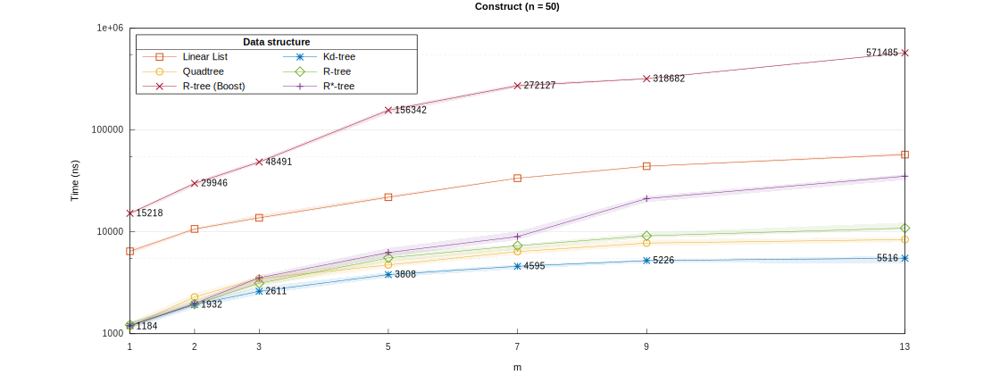

Skip to content
Pareto
Construct
Initializing search
alandefreitas/pareto
Pareto
alandefreitas/pareto
Home
Quick start
Quick start
Spatial Containers
Front Container
Archive Container
Interfaces
Performance
Spatial Containers
Spatial Containers
Containers
Types
Constructors
Allocators
Element Access
Iterators
Capacity and Reference Points
Modifiers
Lookup and Queries
Observers
Relational Operators
Front Container
Front Container
Front Concept
Types
Constructors
Allocators
Element Access
Iterators
Capacity and Reference Points
Dominance Relationships
Indicators
Indicators
Hypervolume
Cardinality
Convergence
Distribution
Correlation
Modifiers
Lookup and Queries
Observers
Relational Operators
Archive Container
Archive Container
Archive Concept
Types
Constructors
Allocators
Element Access
Iterators
Capacity and Reference Points
Dominance Relationships
Indicators
Modifiers
Lookup and Queries
Observers
Relational Operators
Integration
Integration
C++
C++
Embed as header-only
Embed as CMake subdirectory
Embed with CMake FetchContent
Embed with CPM.cmake
Find as CMake package
Python
Python
Embed as project file
Find as package
Installing
Building
Building
Dependencies
Building
Benchmarks
Benchmarks
Introduction
Construct
Insert
Erase
Dominance
Query Intersection
Query Nearest
IGD indicator
Hypervolume indicator
Contributing
Contributing
Ideas
Contributing Guidelines
Contributors
Thanks
References
Construct
